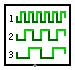
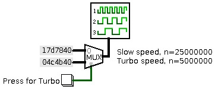

| Library: | BFH mega functions |
| Introduced: | 3.x.x |
| Appearance: |  |
This component only affects FPGA synthesis, and has no effect on the circuit within Logisim's simulation. It allows for in-circuit or user control of the FPGA clock speed. Or more specifically, it controls how the synthesized FPGA circuit derives its clock from the raw FPGA oscillator.
To use the component, place one Dynamic Clock Control component in the top-level of the circuit. The input to this component controls the clock speed of the circuit, when synthesized on an FPGA, as follows. The input is interpreted as an unsigned binary number, between zero and 2w-1, where w is the width specified by the Tick Resolution attribute. When the input is zero, all FPGA clock ticks will be disabled, effectively stopping the clock entirely. When the input is n > 0, then only one out of every n FPGA clock ticks will be enabled, giving an effective clock that is only 1/n as fast as the maximum possible clock rate. (Note: the maximum possible clock rate when using dynamic clock control is actually half the raw FPGA oscillator speed. So if the FPGA has a 50MHz oscillator, the maximum speed is 25MHz. When the dynamic clock control input is set to n=1, then the circuit operates at that speed, but setting it to n=5 would reduct the clock speed to 5MHz.
Hint: Dynamic Clock Control is nice for teaching demonstrations to execute in "slow motion." Pick a few convenient values for the clock speed reduction (e.g. slow, fast, faster, and fastest), define these as constants feeding into a multiplexer, which in turn feeds into the Dynamic Clock Control. With user-facing switches to control the multiplexor, this lets the user pick among these speeds to run the FPGA. Here is an example with just two choices: slow and "turbo", selectable by the user with a button:
In order to make use of the Dynamic Clock Control, it must be enabled when sythesizing the circuit for use in an FPGA. The FPGA Commander window has an option allowing the user to select a clock speed, which must be set to the "Dynamic Speed" option.
There is only one pin, an input whose bit width matches the Tick Resolution attribute. This input determines the clock speed when synthesized for an FPGA. Zero disables the FPGA clock. Other values divide the clock, with larger values making the clock slower.
None.
Supports VHDL and Verilog synthesis.